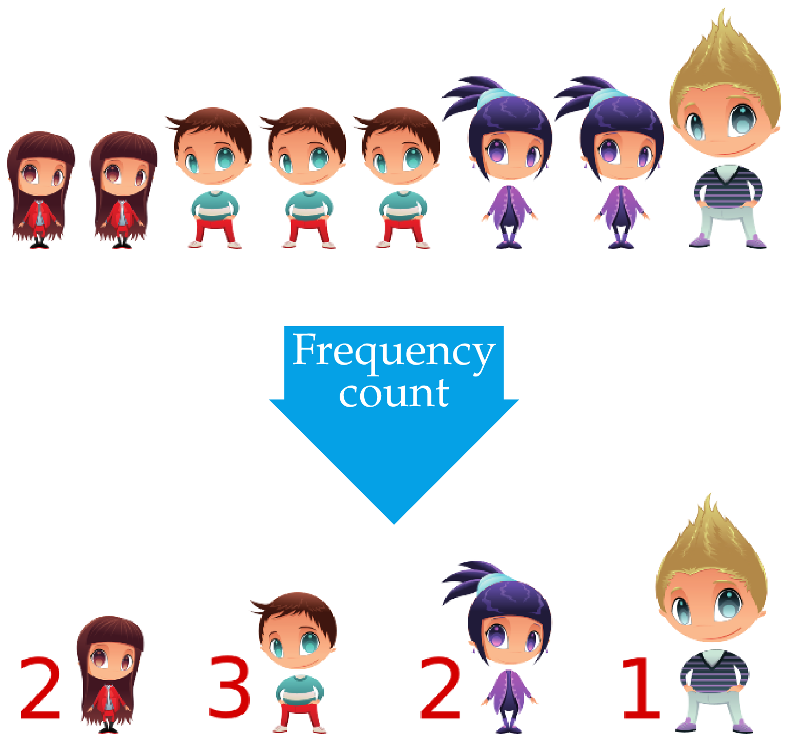
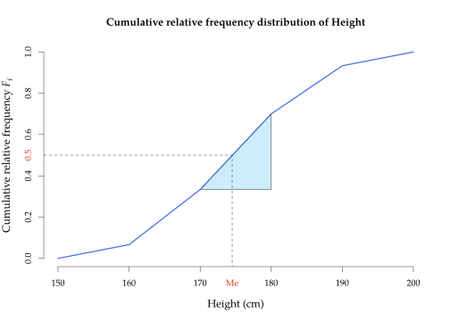
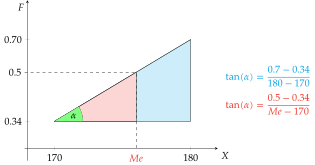
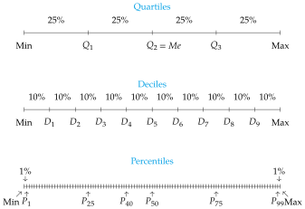
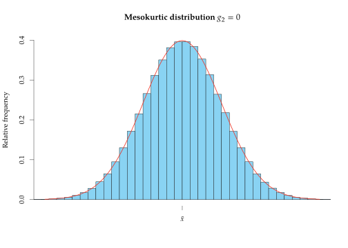
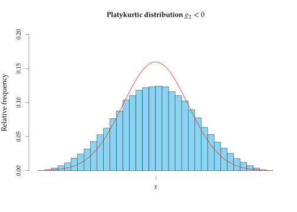
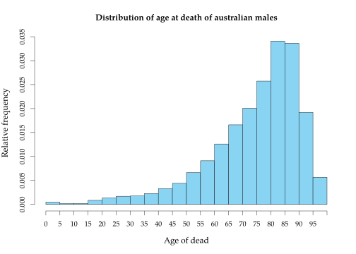
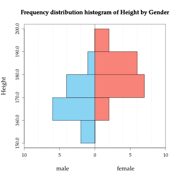

Descriptive Statistics Descriptive Statistics is the part of Statistics in charge of representing, analysing and summarizing the information contained in the sample. After the sampling process, this is the next step in every statistical study and usually consists of: To classify, group and sort the data of the sample. To tabulate and plot data according to their frequencies. To calculate numerical measures that summarize the information contained in the sample (sample statistics). It has no inferential power, so do not generalize to the population from the measures computed by Descriptive Statistics!. Frequency distribution The study of a statistical variable starts by measuring the variable in the individuals of the sample and classifying the values. There are two ways of classifying data: Non-grouping: Sorting values from lowest to highest value (if there is an order). Used with qualitative variables and discrete variables with few distinct values. Grouping: Grouping values into intervals (classes) and sort them from lowest to highest intervals. Used with continuous variables and discrete variables with many distinct values. Sample classification It consists in grouping the values that are the same and sorting them if there is an order among them. Example. $X=$Height Frequency count It consists in counting the number of times that every value appears in the sample. Example. $X=$Height  Sample frequencies Definition - Sample frequencies. Given a sample of $n$ values of a variable $X$, for every value $x_i$ of the variable we define Absolute Frequency $n_i$: The number of times that value $x_i$ appears in the sample. Relative Frequency $f_i$: The proportion of times that value $x_i$ appears in the sample. $$f_i = \frac{n_i}{n}$$ Cumulative Absolute Frequency $N_i$: The number of values in the sample less than or equal to $x_i$. $$N_i = n_1 + \cdots + n_i = N_{i-1}+n_i$$ Cumulative Relative Frequency $F_i$: The proportion of values in the sample less than or equal to $x_i$. $$F_i = \frac{N_i}{n}$$ Frequency table The set of values of a variable with their respective frequencies is called frequency distribution of the variable in the sample, and it is usually represented as a frequency table. $X$ values Absolute frequency Relative frequency Cumulative absolute frequency Cumulative relative frequency $x_1$ $n_1$ $f_1$ $N_1$ $F_1$ $\vdots$ $\vdots$ $\vdots$ $\vdots$ $\vdots$ $x_i$ $n_i$ $f_i$ $N_i$ $F_i$ $\vdots$ $\vdots$ $\vdots$ $\vdots$ $\vdots$ $x_k$ $n_k$ $f_k$ $N_k$ $F_k$ Example - Quantitative variable and non-grouped data. The number of children in 25 families are: 1, 2, 4, 2, 2, 2, 3, 2, 1, 1, 0, 2, 2, 0, 2, 2, 1, 2, 2, 3, 1, 2, 2, 1, 2 The frequency table for the number of children in this sample is $$ \begin{array}{rrrrr} \hline x_i & n_i & f_i & N_i & F_i\newline \hline 0 & 2 & 0.08 & 2 & 0.08\newline 1 & 6 & 0.24 & 8 & 0.32\newline 2 & 14 & 0.56 & 22 & 0.88\newline 3 & 2 & 0.08 & 24 & 0.96\newline 4 & 1 & 0.04 & 25 & 1 \newline \hline \sum & 25 & 1 \newline \hline \end{array} $$ Example - Quantitative variable and grouped data. The heights (in cm) of 30 students are: 179, 173, 181, 170, 158, 174, 172, 166, 194, 185, 162, 187, 198, 177, 178, 165, 154, 188, 166, 171, 175, 182, 167, 169, 172, 186, 172, 176, 168, 187. The frequency table for the height in this sample is $$ \begin{array}{crrrr} \hline x_i & n_i & f_i & N_i & F_i\newline \hline (150,160] & 2 & 0.07 & 2 & 0.07\newline (160,170] & 8 & 0.27 & 10 & 0.34\newline (170,180] & 11 & 0.36 & 21 & 0.70\newline (180,190] & 7 & 0.23 & 28 & 0.93\newline (190,200] & 2 & 0.07 & 30 & 1 \newline \hline \sum & 30 & 1 \newline \hline \end{array} $$ Classes construction Intervals are known as classes and the center of intervals as class marks. When grouping data into intervals, the following rules must be taken into account: The number of intervals should not be too big nor too small. A usual rule of thumb is to take a number of intervals approximately $\sqrt{n}$ or $\log_2(n)$. The intervals must not overlap and must cover the entire range of values. It does not matter if intervals are left-open and right-closed or vice versa. The minimum value must fall in the first interval and the maximum value in the last. Example - Qualitative variable. The blood types of 30 people are: A, B, B, A, AB, 0, 0, A, B, B, A, A, A, A, AB, A, A, A, B, 0, B, B, B, A, A, A, 0, A, AB, 0. The frequency table of the blood type in this sample is $$ \begin{array}{crr} \hline x_i & n_i & f_i \newline \hline \mbox{0} & 5 & 0.16 \newline \mbox{A} & 14 & 0.47 \newline \mbox{B} & 8 & 0.27 \newline \mbox{AB} & 3 & 0.10 \newline \hline \sum & 30 & 1 \newline \hline \end{array} $$ Observe that in this case cumulative frequencies are nonsense as there is no order in the variable. Frequency distribution graphs Usually the frequency distribution is also displayed graphically. Depending on the type of variable and whether data has been grouped or not, there are different types of charts: Bar chart Histogram Line or polygon chart. Pie chart Bar chart A bar chart consists of a set of bars, one for every value or category of the variable, plotted on a coordinate system. Usually the values or categories of the variable are represented on the $x$-axis, and the frequencies on the $y$-axis. For each value or category of the variable, a bar is draw to the height of its frequency. The width of the bar is not important but bars should be clearly separated among them. Depending on the type of frequency represented in the $y$-axis we get different types of bar charts. Sometimes a polygon, known as frequency polygon, is plotted joining the top of every bar with straight lines. Example. The bar chart below shows the absolute frequency distribution of the number of children in the previous sample. The bar chart below shows the relative frequency distribution of the number of children with the frequency polygon. The bar chart below shows the cumulative absolute frequency distribution of the number of children. And the bar chart below shows the cumulative relative frequency distribution of the number of children with the frequency polygon. Histogram A histogram is similar to a bar chart but for grouped data. Usually the classes or grouping intervals are represented on the $x$-axis, and the frequencies on the $y$-axis. For each class, a bar is draw to the height of its frequency. Contrary to bar charts, the width of bars coincides with the width of classes, and there are no space between two consecutive bars. Depending on the type of frequency represented in the $y$-axis we get different types of histograms. As with the bar chart, the frequency polygon can be drawn joining the top centre of every bar with straight lines. Example. The histogram below shows the absolute frequency distribution of heights. The histogram below shows the relative frequency distribution of heights with the frequency polygon. The cumulative frequency polygon (for absolute or relative frequencies) is known as ogive. Example. The histogram and the ogive below show the cumulative relative distribution of heights. Observe that in the ogive we join the top right corner of bars with straight lines, instead of the top center, because we do not reach the accumulated frequency of the class until the end of the interval. Pie chart A pie chart consists of a circle divided in slices, one for every value or category of the variable. Each slice is called a sector and its angle or area is proportional to the frequency of the corresponding value or category. Pie charts can represent absolute or relative frequencies, but not cumulative frequencies, and are used with nominal qualitative variables. For ordinal qualitative or quantitative variables is better to use bar charts, because it is easier to perceive differences in one dimension (length of bars) than in two dimensions (areas of sectors). Example. The pie chart below shows the relative frequency distribution of blood types. The normal distribution Distributions with different properties will show different shapes. Outliers One of the main problems in samples are outliers, values very different from the rest of values of the sample. Example. The last height of the following sample of heights is an outlier. It is important to find out outliers before doing any analysis, because outliers usually distort the results. They always appears in the ends of the distribution, and can be found out easily with a box and whiskers chart (as be show later). Outliers management With big samples outliers have less importance and can be left in the sample. With small samples we have several options: Remove the outlier if it is an error. Replace the outlier by the lower or higher value in the distribution that is not an outlier if it is not an error and the outlier does not fit the theoretical distribution. Leave the outlier if it is not an error, and change the theoretical model to fit it to outliers. Sample statistics The frequency table and charts summarize and give an overview of the distribution of values of the studied variable in the sample, but it is difficult to describe some aspects of the distribution from it, as for example, which are the most representative values of the distribution, how is the spread of data, which data could be considered outliers, or how is the symmetry of the distribution. To describe those aspects of the sample distribution more specific numerical measures, called sample statistics, are used. According to the aspect of the distribution that they study, there are different types of statistics: Measures of locations: They measure the values where data are concentrated or that divide the distribution into equal parts. Measures of dispersion: They measure the spread of data. Measures of shape: They measure aspects related to the shape of the distribution , as the symmetry and the concentration of data around the mean. Location statistics There are two groups: Central location measures: They measure the values where data are concentrated, usually at the centre of the distribution. These values are the values that best represents the sample data. The most important are: Arithmetic mean Median Mode Non-central location measures: They divide the sample data into equals parts. The most important are: Quartiles. Deciles. Percentiles. Arithmetic mean Definition - Sample arithmetic mean $\bar{x}$. The sample arithmetic mean of a variable $X$ is the sum of observed values in the sample divided by the sample size $$\bar{x} = \frac{\sum x_i}{n}$$ It can be calculated from the frequency table with the formula $$\bar{x} = \frac{\sum x_in_i}{n} = \sum x_i f_i$$ In most cases the arithmetic mean is the value that best represent the observed values in the sample. Watch out! It can not be calculated with qualitative variables. Example - Non-grouped data. Using the data of the sample with the number of children of families, the arithmetic mean is $$ \begin{aligned} \bar{x} &= \frac{1+2+4+2+2+2+3+2+1+1+0+2+2}{25}+\newline\newline &+\frac{0+2+2+1+2+2+3+1+2+2+1+2}{25} = \frac{44}{25} = 1.76 \mbox{ children}. \end{aligned} $$ or using the frequency table $$ \begin{array}{rrrrr} \hline x_i & n_i & f_i & x_in_i & x_if_i\newline \hline 0 & 2 & 0.08 & 0 & 0\newline 1 & 6 & 0.24 & 6 & 0.24\newline 2 & 14 & 0.56 & 28 & 1.12\newline 3 & 2 & 0.08 & 6 & 0.24\newline 4 & 1 & 0.04 & 4 & 0.16 \newline \hline \sum & 25 & 1 & 44 & 1.76 \newline \hline \end{array} $$ $$ \bar{x} = \frac{\sum x_in_i}{n} = \frac{44}{25}= 1.76 \mbox{ children}\qquad \bar{x}=\sum{x_if_i} = 1.76 \mbox{ children}. $$ That means that the value that best represent the number of children in the families of the sample is 1.76 children. Example - Grouped data. Using the data of the sample of student heights, the arithmetic mean is $$\bar{x} = \frac{179+173+\cdots+187}{30} = 175.07 \mbox{ cm}.$$ or using the frequency table and taking the class marks as $x_i$, $$ \begin{array}{crrrrr} \hline X & x_i & n_i & f_i & x_in_i & x_if_i\newline \hline (150,160] & 155 & 2 & 0.07 & 310 & 10.33\newline (160,170] & 165 & 8 & 0.27 & 1320 & 44.00\newline (170,180] & 175 & 11 & 0.36 & 1925 & 64.17\newline (180,190] & 185 & 7 & 0.23 & 1295 & 43.17\newline (190,200] & 195 & 2 & 0.07 & 390 & 13 \newline \hline \sum & & 30 & 1 & 5240 & 174.67 \newline \hline \end{array} $$ $$ \bar{x} = \frac{\sum x_in_i}{n} = \frac{5240}{30}= 174.67 \mbox{ cm} \qquad \bar{x}=\sum{x_if_i} = 174.67 \mbox{ cm}. $$ Observe that when the mean is calculated from the table the result differs a little from the real value, because the values used in the calculations are the class marks instead of the actual values. Weighted mean In some cases the values of the sample have different importance. In that case the importance or weight of each value of the sample must be taken into account when calculating the mean. Definition - Sample weighted mean $\bar{x}_p$. Given a sample of values $x_1,\ldots,x_n$ where every value $x_i$ has a weight $w_i$, the sample weighted mean of variable $X$ is the sum of the product of each value by its weight, divided by sum of weights $$\bar{x}_w = \frac{\sum x_iw_i}{\sum w_i}$$ From the frequency table can be calculated with the formula $$\bar{x}_w = \frac{\sum x_iw_in_i}{\sum w_i}$$ Example. Assume that a student wants to calculate a representative measure of his/her performance in a course. The grade and the credits of every subjects are Subject Credits Grade Maths 6 5 Economics 4 3 Chemistry 8 6 The arithmetic mean is $$\bar{x} = \frac{\sum x_i}{n} = \frac{5+3+6}{3}= 4.67 \text{ points}.$$ However, this measure does not represent well the performance of the student, as not all the subjects have the same importance and require the same effort to pass. Subjects with more credits require more work and must have more weight in the calculation of the mean. In this case it is better to use the weighted mean, using the credits as the weights of grades, as a representative measure of the student effort $$ \bar{x}_w = \frac{\sum x_iw_i}{\sum w_i} = \frac{5\cdot 6+3\cdot 4+6\cdot 8}{6+4+8}= \frac{90}{18} = 5 \text{ points}. $$ Median Definition - Sample median $Me$. The sample median of a variable $X$ is the value that is in the middle of the ordered sample. The median divides the sample distribution into two equal parts, that is, there are the same number of values above and below the median. Therefore, it has cumulative frequencies $N_{Me}= n/2$ y $F_{Me}= 0.5$. Watch out! It can not be calculated for nominal variables. With non-grouped data, there are two possibilities: Odd sample size: The median is the value in the position $\frac{n+1}{2}$. Even sample size: The median is the average of values in positions $\frac{n}{2}$ and $\frac{n}{2}+1$. Example. Using the data of the sample with the number of children of families, the sample size is 25, that is odd, and the median is the value in the position $\frac{25+1}{2} = 13$ of the sorted sample. $$0,0,1,1,1,1,1,1,2,2,2,2,\fbox{2},2,2,2,2,2,2,2,2,2,3,3,4$$ And the median is 2 children. With the frequency table, the median is the lowest value with a cumulative absolute frequency greater than or equal to $13$, or with a cumulative relative frequency greater than or equal to $0.5$. $$ \begin{array}{rrrrr} \hline x_i & n_i & f_i & N_i & F_i\newline \hline 0 & 2 & 0.08 & 2 & 0.08\newline 1 & 6 & 0.24 & 8 & 0.32\newline \color{red}2 & 14 & 0.56 & 22 & 0.88\newline 3 & 2 & 0.08 & 24 & 0.96\newline 4 & 1 & 0.04 & 25 & 1 \newline \hline \sum & 25 & 1 \newline \hline \end{array} $$ Median calculation for grouped-data For grouped data the median is calculated from the ogive, interpolating in the class with cumulative relative frequency 0.5. Both expressions are equal as the angle $\alpha$ is the same, and solving the equation we get that the formula for the median is $$ Me=l_i+\frac{0.5-F_{i-1}}{F_i-F_{i-1}}(l_i-l_{i-1})=l_i+\frac{0.5-F_{i-1}}{f_i}a_i $$ Example - Grouped data. Using the data of the sample of student heights, the median falls in class (170,180].  And interpolating in interval (170,180] we get  Equating both expressions and solving the equation, we get $$ Me= 170+\frac{0.5-0.34}{0.7-0.34}(180-170)=170+\frac{0.16}{0.36}10=174.54 \mbox{ cm}. $$ This means that half of the students in the sample have an height lower than or equal to 174.54 cm and the other half greater than or equal to. Mode Definition - Sample Mode $Mo$. The sample mode of a variable $X$ is the most frequent value in the sample. With grouped data the modal class is the class with the highest frequency. It can be calculated for all types of variables (qualitative and quantitative). Distributions can have more than one mode. Example. Using the data of the sample with the number of children of families, the value with the highest frequency is $2$, that is the mode $Mo = 2$ children. $$ \begin{array}{rr} \hline x_i & n_i \newline \hline 0 & 2 \newline 1 & 6 \newline \color{red} 2 & 14 \newline 3 & 2 \newline 4 & 1 \newline \hline \end{array} $$ Using the data of the sample of student heights, the class with the highest frequency is $(170,180]$ that is the modal class $Mo=(170,180]$. $$ \begin{array}{cr} \hline X & n_i \newline \hline (150,160] & 2 \newline (160,170] & 8 \newline \color{red}{(170,180]} & 11 \newline (180,190] & 7 \newline (190,200] & 2 \newline \hline \end{array} $$ Which central tendency statistic should I use? In general, when all the central tendency statistics can be calculated, is advisable to use them as representative values in the following order: The mean. Mean takes more information from the sample than the others, as it takes into account the magnitude of data. The median. Median takes less information than mean but more than mode, as it takes into account the order of data. The mode. Mode is the measure that fewer information takes from the sample, as it only takes into account the absolute frequency of values. But, be careful with outliers, as the mean can be distorted by them. In that case it is better to use the median as the value most representative. Example. If a sample of number of children of 7 families is 0, 0, 1, 1, 2, 2, 15, then, $\bar{x}=3$ children and $Me=1$ children. Which measure represent better the number of children in the sample? Non-central location measures The non-central location measures or quantiles divide the sample distribution in equal parts. The most used are: Quartiles: Divide the distribution into 4 equal parts. There are 3 quartiles: $C_1$ (25% accumulated) , $C_2$ (50% accumulated), $C_3$ (75% accumulated). Deciles: Divide the distribution into 10 equal parts. There are 9 deciles: $D_1$ (10% accumulated) ,…, $D_9$ (90% accumulated). Percentiles: Divide the distribution into en 100 equal parts. There are 99 percentiles: $P_1$ (1% accumulated),…, $P_{99}$ (99% accumulated).  Observe that there is a correspondence between quartiles, deciles and percentiles. For example, first quartile coincides with percentile 25, and fourth decile coincides with the percentile 40. Quantiles are calculated in a similar way to the median. The only difference lies in the cumulative relative frequency that correspond to every quantile. Example. Using the data of the sample with the number of children of families, the cumulative relative frequencies were $$ \begin{array}{rr} \hline x_i & F_i \newline \hline 0 & 0.08\newline 1 & 0.32\newline 2 & 0.88\newline 3 & 0.96\newline 4 & 1\newline \hline \end{array} $$ $$ \begin{aligned} F_{Q_1}=0.25 &\Rightarrow Q_1 = 1 \text{ children},\newline F_{Q_2}=0.5 &\Rightarrow Q_2 = 2 \text{ children},\newline F_{Q_3}=0.75 &\Rightarrow Q_3 = 2 \text{ children},\newline F_{D_4}=0.4 &\Rightarrow D_4 = 2 \text{ children},\newline F_{P_{92}}=0.92 &\Rightarrow P_{92} = 3 \text{ children}. \end{aligned}$$ Dispersion statistics Dispersion or spread refers to the variability of data. So, dispersion statistics measure how the data values are scattered in general, or with respect to a central location measure. For quantitative variables, the most important are: Range Interquartile range Variance Standard deviation Coefficient of variation Range Definition - Sample range. The sample range of a variable $X$ is the difference between the the maximum and the minimum values in the sample. $$\text{Range} = \max_{x_i} -\min_{x_i}$$ The range measures the largest variation among the sample data. However, it is very sensitive to outliers, as they appear at the ends of the distribution, and for that reason is rarely used. Interquartile range The following measure avoids the problem of outliers and is much more used. Definition - Sample interquartile range. The sample interquartile range of a variable $X$ is the difference between the third and the first sample quartiles. $$\text{IQR} = Q_3-Q_1$$ The interquartile range measures the spread of the 50% central data. Box plot The dispersion of a variable in a sample can be graphically represented with a box plot, that represent five descriptive statistics (minimum, quartiles and maximum) known as the five-numbers. It consist in a box, drawn from the lower to the upper quartile, that represent the interquartile range, and two segments, known as the lower and the upper whiskers. Usually the box is split in two with the median. This chart is very helpful as it serves to many purposes: It serves to measure the spread of data as it represents the range and the interquartile range. It serves to detect outliers, that are the values outside the interval defined by the whiskers. It serves to measure the symmetry of distribution, comparing the length of the boxes and whiskers above and below the median. Example. The chart below shows a box plot of newborn weights. To create a box plot follow the steps below: Calculate the quartiles. Draw a box from the lower to the upper quartile. Split the box with the median or second quartile. For the whiskers calculate first two values called fences $f_1$ y $f_2$. The lower fence is the lower quartile minus one and a half the interquartile range, and the upper fence is the upper quartile plus one and a half the interquartile range: $$\begin{aligned} f_1&=Q_1-1.5,\text{IQR}\newline f_2&=Q_3+1.5,\text{IQR} \end{aligned}$$ The fences define the interval where data are considered normal. Any value outside that interval is considered an outlier. For the lower whisker draw a segment from the lower quartile to the lower value in the sample grater than or equal to $f_1$, and for the upper whisker draw a segment from the upper quartile to the highest value in the sample lower than or equal to $f_2$. The whiskers are not the fences. Finally, if there are outliers, draw a dot at every outlier. Example. The box plot for the sample with the number of children si shown below. Deviations from the mean Another way of measuring spread of data is with respect to a central tendency measure, as for example the mean. In that case, it is measured the distance from every value in the sample to the mean, that is called deviation from the mean· If deviations are big, the mean is less representative than when they are small. Example. The grades of 3 students in a course with subjects $A$, $B$ and $C$ are shown below. $$ \begin{array}{cccc} \hline A & B & C & \bar x\newline 0 & 5 & 10 & 5\newline 4 & 5 & 6 & 5\newline 5 & 5 & 5 & 5\newline \hline \end{array} $$ All the students have the same mean, but, in which case does the mean represent better the course performance? Variance and standard deviation Definition – Sample variance $s^2$. The sample variance of a variable $X$ is the average of the squared deviations from the mean. $$s^2 = \frac{\sum (x_i-\bar x)^2n_i}{n} = \sum (x_i-\bar x)^2f_i$$ It can also be calculated with the formula $$s^2 = \frac{\sum x_i^2n_i}{n} -\bar x^2= \sum (x_i^2f_i)-\bar x^2$$ The variance has the units of the variable squared, and to ease its interpretation it is common to calculate its square root. Definition - Sample standard deviation $s$. The sample standard deviation of a variable $X$ is the square root of the variance. $$s = +\sqrt{s^2}$$ Both variance and standard deviation measure the spread of data around the mean. When the variance or the standard deviation are small, the sample data are concentrated around the mean, and the mean is a good representative measure. In contrast, when variance or the standard deviation are high, the sample data are far from the mean, and the mean does not represent so well. Standard deviation small $\Rightarrow$ Mean is representative Standard deviation big $\Rightarrow$ Mean is unrepresentative Example. The following samples contains the grades of 2 students in 2 subjects Which mean is more representative? Example - Non-grouped data. Using the data of the sample with the number of children of families, with mean $\bar x= 1.76$ children, and adding a new column to the frequency table with the squared values, $$ \begin{array}{rrr} \hline x_i & n_i & x_i^2n_i \newline \hline 0 & 2 & 0 \newline 1 & 6 & 6 \newline 2 & 14 & 56\newline 3 & 2 & 18\newline 4 & 1 & 16 \newline \hline \sum & 25 & 96 \newline \hline \end{array}$$ $$s^2 = \frac{\sum x_i^2n_i}{n}-\bar x^2 = \frac{96}{25}-1.76^2= 0.7424 \mbox{ children}^2.$$ and the standard deviation is $s=\sqrt{0.7424} = 0.8616$ children. Compared to the range, that is 4 children, the standard deviation is not very large, so we can conclude that the dispersion of the distribution is small and consequently the mean, $\bar x=1.76$ children, represents quite well the number of children of families of the sample. Example - Grouped data. Using the data of the sample with the heights of students and grouping heights in classes, we got a mean $\bar x=174.67$ cm. The calculation of variance is the same than for non-grouped data but using the class marks. $$ \begin{array}{crrr} \hline X & x_i & n_i & x_i^2n_i \newline \hline (150,160] & 155 & 2 & 48050\newline (160,170] & 165 & 8 & 217800\newline (170,180] & 175 & 11 & 336875\newline (180,190] & 185 & 7 & 239575\newline (190,200] & 195 & 2 & 76050\newline \hline \sum & & 30 & 918350 \newline \hline \end{array} $$ $$s^2 = \frac{\sum x_i^2n_i}{n}-\bar x^2 = \frac{918350}{30}-174.67^2= 102.06 \mbox{ cm}^2,$$ and the standard deviation is $s=\sqrt{102.06} = 10.1$ cm. This value is quite small compared to the range of the variable, that goes from 150 to 200 cm, therefore the distribution of heights has little dispersion and the mean is very representative. Coefficient of variation Both, variance and standard deviation, have units and that makes difficult to interpret them, specially when comparing distributions of variables with different units. For that reason it is also common to use the following dispersion measure that has no units. Definition - Sample coefficient of variation $cv$. The sample coefficient of variation of a variable $X$ is the quotient between the sample standard deviation and the absolute value of the sample mean. $$cv = \frac{s}{|\bar x|}$$ The coefficient of variation measures the relative dispersion of data around the sample mean. As it has no units, it is easier to interpret: The higher the coefficient of variation is, the higher the relative dispersion with respect to the mean and the less representative the mean is. The coefficient of variation it is very helpful to compare dispersion in distributions of different variables, even if variables have different units. Example. In the sample of the number of children, where the mean was $\bar x=1.76$ and the standard deviation was $s=0.8616$ children, the coefficient of variation is $$cv = \frac{s}{|\bar x|} = \frac{0.8616}{|1.76|} = 0.49.$$ In the sample of heights, where the mean was $\bar x=174.67$ cm and the standard deviation was $s=10.1$ cm, the coefficient of variation is $$cv = \frac{s}{|\bar x|} = \frac{10.1}{|174.67|} = 0.06.$$ This means that the relative dispersion in the heights distribution is lower than in the number of children distribution, and consequently the mean of height is most representative than the mean of number of children. Shape statistics They are measures that describe the shape of the distribution. In particular, the most important aspects are: Symmetry It measures the symmetry of the distribution with respect to the mean. The statistics most used is the coefficient of skewness. Kurtosis: It measures the concentration of data around the mean of the distribution. The statistics most used is the coefficient of kurtosis. Coefficient of skewness Definition - Sample coefficient of skewness $g_1$. The sample coefficient of skewness of a variable $X$ is the average of the deviations of values from the sample mean to cube, divided by the standard deviation to cube. $$g_1 = \frac{\sum (x_i-\bar x)^3 n_i/n}{s^3} = \frac{\sum (x_i-\bar x)^3 f_i}{s^3}$$ The coefficient of skewness measures the symmetric or skewness of the distribution, that is, how many values in the sample are above or below the mean and how far from it. $g_1=0$ indicates that there are the same number of values in the sample above and below the mean and equally deviated from it, and the distribution is symmetrical. $g_1<0$ indicates that there are more values above the mean than below it, but the values below are further from it, and the distribution is left-skewed (it has longer tail to the left). $g_1>0$ indicates that there are more values below the mean than above it, but the values above are further from it, and the distribution is right-skewed (it has longer tail to the right). Example - Grouped data. Using the frequency table of the sample with the heights of students and adding a new column with the deviations from the mean $\bar x = 174.67$ cm to cube, we get $$ \begin{array}{crrrr} \hline X & x_i & n_i & x_i-\bar x & (x_i-\bar x)^3 n_i \newline \hline (150,160] & 155 & 2 & -19.67 & -15221.00\newline (160,170] & 165 & 8 & -9.67 & -7233.85\newline (170,180] & 175 & 11 & 0.33 & 0.40\newline (180,190] & 185 & 7 & 10.33 & 7716.12\newline (190,200] & 195 & 2 & 20.33 & 16805.14\newline \hline \sum & & 30 & & 2066.81 \newline \hline \end{array} $$ $$g_1 = \frac{\sum (x_i-\bar x)^3n_i/n}{s^3} = \frac{2066.81/30}{10.1^3} = 0.07.$$ As it is close to 0, that means that the distribution of heights is fairly symmetrical. Coefficient of kurtosis Definition - Sample coefficient of kurtosis $g_2$ The sample coefficient of kurtosis of a variable $X$ is the average of the deviations of values from the sample mean to the fourth power, divided by the standard deviation to the fourth power and minus 3. $$g_2 = \frac{\sum (x_i-\bar x)^4 n_i/n}{s^4}-3 = \frac{\sum (x_i-\bar x)^4 f_i}{s^4}-3$$ The coefficient of kurtosis measures the concentration of data around the mean and the length of tails of distribution. The normal (Gaussian bell-shaped) distribution is taken as a reference. $g_2=0$ indicates that the kurtosis is normal, that is, the concentration of values around the mean is the same than in a Gaussian bell-shaped distribution (mesokurtic).  $g_2<0$ indicates that the kurtosis is less than normal, that is, the concentration of values around the mean is less than in a Gaussian bell-shaped distribution (platykurtic).  $g_2>0$ indicates that the kurtosis is greater than normal, that is, the concentration of values around the mean is greater than in a Gaussian bell-shaped distribution (leptokurtic). Example - Grouped data. Using the frequency table of the sample with the heights of students and adding a new column with the deviations from the mean $\bar x = 174.67$ cm to the fourth power, we get $$ \begin{array}{rrrrr} \hline X & x_i & n_i & x_i-\bar x & (x_i-\bar x)^4 n_i\newline \hline (150,160] & 155 & 2 & -19.67 & 299396.99\newline (160,170] & 165 & 8 & -9.67 & 69951.31\newline (170,180] & 175 & 11 & 0.33 & 0.13\newline (180,190] & 185 & 7 & 10.33 & 79707.53\newline (190,200] & 195 & 2 & 20.33 & 341648.49\newline \hline \sum & & 30 & & 790704.45 \newline \hline \end{array} $$ $$g_2 = \frac{\sum (x_i-\bar x)^4n_i/n}{s^4} - 3 = \frac{790704.45/30}{10.1^4}-3 = -0.47.$$ As it is a negative value but not too far from 0, that means that the distribution of heights is a little bit platykurtic. As we will see in the chapters of inferential statistics, many of the statistical test can only be applied to normal (bell-shaped) populations. Normal distributions are symmetrical and mesokurtic, and therefore, their coefficients of symmetry and kurtosis are equal to 0. So, a way of checking if a sample comes from a normal population is looking how far are the coefficients of skewness and kurtosis from 0. In general, the normality of population is rejected when $g_1$ or $g_2$ are outside the interval $[-2,2]$. In that case, is common to apply a transformation to the variable to correct non-normality. Non-normal distributions Non-normal right-skewed distribution An example of left-skewed distribution is the household income. Non-normal left-skewed distribution An example of left-skewed distribution is the age at death.  distribution Non-normal bimodal distribution An example of left-skewed distribution is the age at death. Variable transformations In many cases, the raw sample data are transformed to correct non-normality of distribution or just to get a more appropriate scale. For example, if we are working with heights in metres and a sample contains the following values: $$ 1.75 \mbox{ m}, 1.65 \mbox{ m}, 1.80 \mbox{ m}, $$ it is possible to avoid decimals multiplying by 100, that is, changing from metres to centimetres: $$ 175 \mbox{ cm}, 165 \mbox{ cm}, 180 \mbox{ cm}, $$ And it is also possible to reduce the magnitude of data subtracting the minimum value in the sample, in this case 165 cm: $$ 10 \mbox{ cm}, 0 \mbox{ cm}, 15 \mbox{ cm}. $$ It is obvious that these data are easier to work with than the original ones. In essences, what it is been done is to apply the following transformation to the data: $$Y= 100X-165$$ Linear transformations One of the most common transformations is the linear transformation: $$Y=a+bX.$$ For a linear transformation, the mean and the standard deviation of the transformed variable are $$ \begin{aligned} \bar y &= a+ b\bar x,\newline s_{y} &= |b|s_{x} \end{aligned} $$ Additionally, the coefficient of kurtosis does not change and the coefficient of skewness changes only the sign if $b$ is negative. Standardization and standard scores One of the most common linear transformations is the standardization. Definition - Standardized variable and standard scores. The standardized variable of a variable $X$ is the variable that results from subtracting the mean from $X$ and dividing it by the standard deviation $$Z=\frac{X-\bar x}{s_{x}}.$$ For each value $x_i$ of the sample, the standard score is the value that results of applying the standardization transformation $$z_i=\frac{x_i-\bar x}{s_{x}}.$$ The standard score is the number of standard deviations a value is above or below the mean, and it is useful to avoid the dependency of the variable from its measurement units. This helps, for instance, to compare values from different variables or samples. The standardized variable always has mean 0 and standard deviation 1. $$\bar z = 0 \qquad s_{z} = 1$$ Example. The grades of 5 students in 2 subjects are $$ \begin{array}{rccccccccc} \mbox{Student:} & 1 & 2 & 3 & 4 & 5 & \newline \hline X: & 2 & 5 & 4 & \color{red} 8 & 6 & \qquad & \bar x = 5 & \quad s_x = 2\newline Y: & 1 & 9 & \color{red} 8 & 5 & 2 & \qquad & \bar y = 5 & \quad s_y = 3.16\newline \hline \end{array} $$ Did the fourth student get the same performance in subject $X$ than the third student in subject $Y$? It might seem that both students had the same performance in every subject because they have the same grade, but in order to get the performance of every student relative to the group of students, the dispersion of grades in every subject must be considered. For that reason it is better to use the standard score as a measure of relative performance. $$ \begin{array}{cccccc} \mbox{Student:} & 1 & 2 & 3 & 4 & 5\newline \hline X: & -1.50 & 0.00 & -0.50 & \color{red}{1.50} & 0.50 \newline Y: & -1.26 & 1.26 & \color{red}{0.95} & 0.00 & -0.95\newline \hline \end{array} $$ That is, the student with an 8 in $X$ is $1.5$ times the standard deviation above the mean of $X$, while the student with an 8 in $Y$ is only $0.95$ times the standard deviation above the mean of $Y$. Therefore, the first student had a higher performance in $X$ than the second in $Y$. Following with this example and considering both subjects, which is the best student? If we only consider the sum of grades $$\begin{array}{rccccc} \mbox{Student:} & 1 & 2 & 3 & 4 & 5\newline \hline X: & 2 & 5 & 4 & 8 & 6 \newline Y: & 1 & 9 & 8 & 5 & 2 \newline \hline \sum & 3 & \color{red}{14} & 12 & 13 & 8 \end{array} $$ the best student is the second one. But if the relative performance is considered, taking the standard scores $$ \begin{array}{rccccc} \mbox{Student:} & 1 & 2 & 3 & 4 & 5\newline \hline X: & -1.50 & 0.00 & -0.50 & 1.50 & 0.50 \newline Y: & -1.26 & 1.26 & 0.95 & 0.00 & -0.95\newline \hline \sum & -2.76 & 1.26 & 0.45 & \color{red}{1.5} & -0.45 \end{array} $$ the best student is the fourth one. Non-linear transformations Non-linear transformations are also common to correct non-normality of distributions. The square transformation $Y=X^2$ compresses small values and expand large values. So, it is used to correct left-skewed distributions. The square root transformation $Y=\sqrt x$, the logarithmic transformation $Y= \log X$ and the inverse transformation $Y=1/X$ compress large values and expand small values. So, they are used to correct right-skewed distributions. Factors Sometimes it is interesting to describe the frequency distribution of the main variable for different subsamples corresponding to the categories of another variable known as classificatory variable or factor. Example. Dividing the sample of heights by gender we get two subsamples $$ \begin{array}{lll} \hline \mbox{Females} & & 173, 158, 174, 166, 162, 177, 165, 154, 166, 182, 169, 172, 170, 168. \newline \mbox{Males} & & 179, 181, 172, 194, 185, 187, 198, 178, 188, 171, 175, 167, 186, 172, 176, 187. \newline \hline \end{array} $$ Comparing distributions for the levels of a factor Usually factors allow to compare the distribution of the main variable for every category of the factor. Example. The following charts allow to compare the distribution of heights according to the gender.  Statistics Biostatistics Descriptive-Statistics Previous Introduction Next Regression